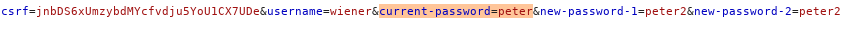
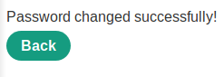
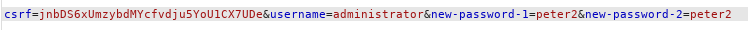
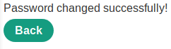
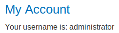

Weak isolation on dual-use endpoint: users can change administrator password
A mandatory parameter can be removed from the request, and the request will complete anyway!
With this trick we can change administrator password
Vulnerability Check
Eliminate a parameter from a request and check if the request is anyway completed
1. Check the parameters requested when we want to change the password of our account, if we remove one of them the request is anyway completed?

◇ “current-password” parameter?


yes!
EXTRA
2. What if we can change also the username?


3. Lets try to login as administrator

:)